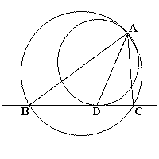

Application of Alternate Segment Theorem
Problem
The segment BC is a chord of the big circle.
The small circle touches the big circle at point A and touches the segment BC at point D.
Find the law about the angles.

Applet
Drag red point and big circle.